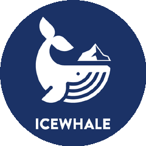

TODAY · GITHUB
工具杀入一大半
PDF 秒变
AI 格式
今日榜单，开发者用脚投票
#01
AI 看懂设计稿
google-labs-code / design.md

给 AI 描述视觉设计的规范格式
+2319
今日涨星最高 · 21.2K 总星
#02
AI 能上网看
Panniantong / Agent-Reach

给 AI 智能体能看遍全网的眼睛
+1164
今日涨星 · 42.3K 总星
100m80m60m40m20m
#03
自托管旅行规划
mauriceboe / TREK

实时协作互动地图的旅行规划器
+1063
今日涨星 · 7.6K 总星
| 00| 25| 50| 75| 99
#04
文档转 AI 格式
opendatalab / MinerU

把 PDF 和 Office 转成大模型能读的格式
+944
今日涨星 · 70.4K 总星
#05
自建家庭云盘
IceWhaleTech / CasaOS

把旧电脑变成私人云盘
+612
今日涨星 · 35.3K 总星
#06
无 ID 加密聊天
反直觉的隐私设计
simplex-chat / simplex-chat

不用手机号
不用账号
不用任何 ID 也能聊天
这几个里
你最想试试哪个？
你最想试试哪个？
关注我 · 下期见